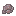
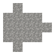

Введение
В TerraFirmaCraft первые предметы, которые вы можете получить — это палки, ветки и рассыпанные камни. Их можно найти почти в любом климате, разбросанными по земле. Нажмите ПКМ или разбейте их, чтобы подобрать.
Пример
Структура
Несколько обычных палок и камней.
Помимо подбора с земли, палки также можно получить, разбивая листву. Как только у вас будет достаточно камней и палок, вы готовы начать оббивание. Оббивание — это процесс, при котором два камня бьются друг о друга, чтобы придать одному из них определённую форму. Чтобы начать оббивание, возьмите минимум два камня в руку, затем нажмите ПКМ в воздухе, что откроет интерфейс оббивания.
Интерфейс лепки.
Чтобы сделать определённый предмет, вам нужно убрать квадраты, пока не сформируется необходимый узор. Например, создайте лезвие ножа, следуя узору, показанному справа.
Как и в рецептах крафта, расположение узора не имеет значения, и некоторые рецепты имеют несколько вариантов.

Лезвие ножа, изготовленное из разных типов камней.


Все головки каменных инструментов можно собрать с палкой или веткой, чтобы превратить их в рабочий инструмент.
Каменный нож можно использовать для сбора соломы, срезая растения.
Топоры можно использовать для рубки деревьев целиком, включая как бревна, так и листву. Однако саженцы и палки можно получить только ломая листву.
Лопаты можно использовать для копания блоков, например почвы. Их также можно использовать для создания тропинок путём использования их на земле или траве.

Мотыги — полезные инструменты для фермерства, но их также можно использовать для срезания листвы и другого растительного материала.
Молоты можно использовать как дробящее оружие, но они более важны в качестве инструментов для ковки.
Наконец, дротики можно использовать как примитивное оружие для кидания в цели или как пронзающее оружие.